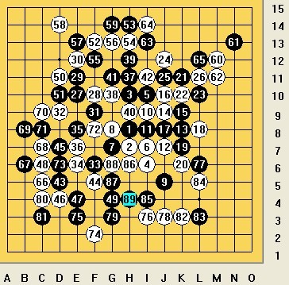
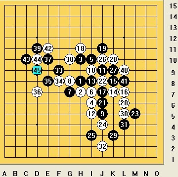
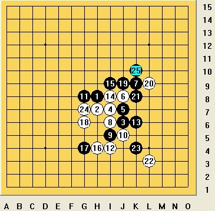
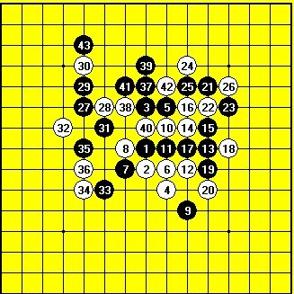
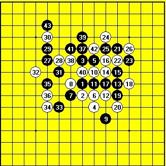

2010全团赛输棋自评
#1 2010全团赛输棋自评 作者：狮子何必吼 发表时间：2010-5-6 1:09:29
这次全团赛虽然时间上不够用，加上水平有限，计算太慢，没下出什么满意的棋来，就简单说说输的三盘棋吧。

第三轮开始前还没和对手下棋呢，就给周围的人吓死了，什么“进攻超强……”、”广东赛把所有高手砍了个遍……”、“他攻起来你绝对防不住……”、“你完蛋了……”，以至于开赛的时候对手开出瑞星，本来没打算换的，但这些叮咛突然在我耳边回响，让我一恍惚，选择了交换~~16不冲四先跳三的变化我从来没下过，至27下的不够犀利，不过还算把握住先手，实战选择的29是因为我想如果他顺势挡E9，我就走37的位置，那样白好像防不住了吧，正心里小美着，对手仿佛从一个更高的地方俯瞰着我，下了个很诡异的30，当时就觉得我能杀了但这个时间我没法去算，谨遵道道守和的战术指导我下了31，接着32又诡异了一把，有种四两拨千斤的味道，防的很好，而且对手一直都下的很快，心里暗自感叹对手的强悍啊~~这样37的位置彻底无杀了，接着下35还是对37的位置不死心吧，其实已经没必要了，37到39缺乏理智，好像不攻几把不爽似的。下完49，对方轻轻的说“防的好郁闷，我要攻啦~~”，后脑勺一滴汗，撑到61,62后的棋型让我想起智运会最后一轮和阿布的那个35手刻骨铭心的大勺子，遂不犹豫的丢了63，当我快读秒时，68还给我挖了个坑，我也对他说“哼，想抓我433呀”，啪地，冲四先拍了上去，后面都是1分钟不到下的棋了，这时候道道赢了，估计是他要争胜了，84想了好几分钟，85还心存侥幸看看能不能检漏：貌似想都没想地拍上去，让他以为我是怕超时乱走的，这个时候他要是活个三什么的#￥%#@~@嘿嘿（美梦中），86防的很快也很好，破碎了我的小美梦，当时在紧张的时间中心里还小赞叹了一下，却没想到它将制造一场大噩梦- -~~当时因为时间太紧张，我专注于算如何交换掉，于是4线清晰了，6线模糊了，89后，对方抬头用非常迷茫的眼神望着我说“我活五了。”顿时，我眼前一片黑……本该和的棋，就这样挂掉啦，低级失误呀！疯了！
-------------

和混混的这盘，20耗费了太长的时间，当时算即使20走实战的地方，黑也杀了，实际上我算错了。之后就是读秒的棋了。无奈时间不够被杀掉了。回去复盘，道道说20走错了，G10就必胜了，这里我忽略了白的反，之后到25清清来一看，几秒的时间迅速的摆出了26到30，对杀的感觉好强呀！充分看到了自己的能力的薄弱，图如下：

两次漏杀，弱的不像话了，该好好反省了。。。
-------------

本来非常期待和清源的对局，兴奋的6点就醒了，结果是一场考试，而且还不太好变着，觉得特别没意思，早知道就不要去计较胜负交换掉算了，攻几把死掉也比实战下的爽，突然就没有心情下了，草草下了几手挂掉了。。。情绪化的一局，继续反省。
-----------
［此帖子已被 狮子何必吼 在 2010-5-6 1:14:59 编辑过］
［此帖子已被 狮子何必吼 在 2010-5-6 1:18:05 编辑过］
［ 菜包先生 于 2010-5-6 4:33:34 时花20金币送鲜花一朵］
［ 黄药师 于 2010-5-6 8:11:39 时奖励此帖[金币加 20 威望加1］
［ 黄药师 于 2010-5-6 8:11:53 时花20金币送鲜花一朵］
［ 行云流水 于 2010-5-6 17:34:37 时奖励此帖[金币加 20 威望加1］
#2 Re:2010全团赛对局自评 作者：雅匪 发表时间：2010-5-6 1:16:47
智慧型美女帖 先留爪占沙发 哈哈#3 Re:2010全团赛输棋自评 作者：tears 发表时间：2010-5-6 4:13:44
 take it easy~
take it easy~
#4 Re:2010全团赛输棋自评 作者：菜包先生 发表时间：2010-5-6 4:17:58
 功力相当深厚哦，美中不足的是用黑石拆了一下，发现1处漏杀哦如图： 
功力相当深厚哦，美中不足的是用黑石拆了一下，发现1处漏杀哦如图： ［此帖子已被 菜包先生 在 2010-5-6 4:24:24 编辑过］
［ 狮子何必吼 于 2010-5-6 18:48:42 时花20金币送鲜花一朵］
#5 Re:2010全团赛输棋自评 作者：狮子何必吼 发表时间：2010-5-6 18:50:08
感谢4楼，深刻反省……
#6 Re:2010全团赛输棋自评 作者：紋枰論道 发表时间：2010-5-6 20:29:19
澳门仔，香港仔都很强啊#7 Re:Re:2010全团赛输棋自评 作者：南京小飞机 发表时间：2010-5-6 21:27:53
引用：
原文由 紋枰論道 发表于 2010-5-6 20:29:19 :
澳门仔，香港仔都很强啊
港澳台同胞 海外侨胞
#8 Re:2010全团赛输棋自评 作者：罗马王子 发表时间：2010-5-6 22:24:35
期待明年！
#9 Re:2010全团赛输棋自评 作者：我就不信注册不上 发表时间：2010-5-6 23:24:13
怎么不来个赢棋自评啊？
第一局那个冲四不挡，真晕；不过更晕的是，我比赛时候还有过冲四不挡而对手也没发现的情况，最后竟然还是我取胜（对方冲四，我没挡，另走了个四三，对方认输了）
#10 Re:2010全团赛输棋自评 作者：岑小鱼 发表时间：2010-5-6 23:34:28
楼上彪悍 肯定是春哥曾哥一起信了#11 Re:2010全团赛输棋自评 作者：辽宁棋子 发表时间：2010-5-8 12:28:02
偶学到好多。~~~#12 Re:2010全团赛输棋自评 作者：天真無邪 发表时间：2010-5-8 19:29:58
獅子防守太厲害了，在進攻上下點功夫就能變超高手了
#13 Re:2010全团赛输棋自评 作者：武汉荆楚情 发表时间：2010-5-8 22:35:39
狮子加油！相信你还会更强哈！
#14 Re:2010全团赛输棋自评 作者：龙小小 发表时间：2010-5-8 22:50:35
 加油
加油
#15 Re:2010全团赛输棋自评 作者：厦门小天 发表时间：2010-5-18 10:42:30
最后一盘也简单漏杀啊，为啥我对手从来没给我检漏的机会呢，羡慕地郁闷下#16 Re:2010全团赛输棋自评 作者：啊呆 发表时间：2010-7-19 16:37:04
小天老师千秋万载寿与天齐一统江湖~#17 Re:2010全团赛输棋自评 作者：霸王龙 发表时间：2010-12-1 12:15:33
…………